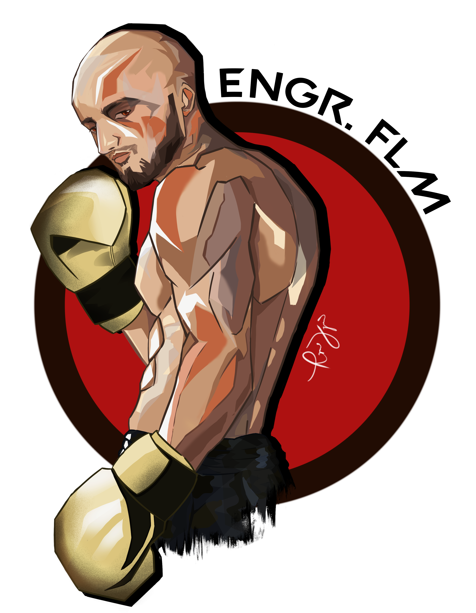
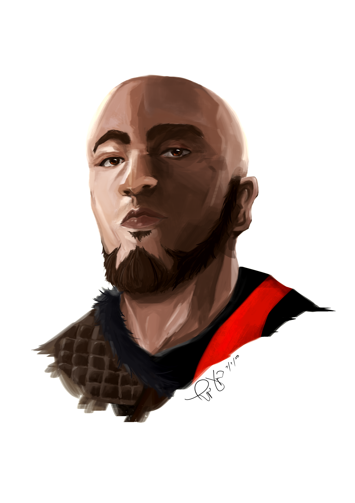

DEANZANO CIVIL ENGINEERING LECTURES
Welcome to the Deanzano Civil Engineering Lectures page. Here you will find resources and information related to civil engineering topics with youtube video links.
Welcome to DEANZANO, your go-to resource for Civil Engineering concepts
Lecturer: Engr. Ferdean Leroy B. Manzano
Lecturer Profile: Saint Louis University BSCE Batch 2017 Graduate | November 2017 Civil Engineering Board Examination Passer (Rating:90.55) | DPWH Contractor's/Consultant's Materials Engineer (Accreditation Examination Passed under DO 149 series of 2019) | Project Manager/Structural Design Engineer @ F. L. Manzano Design and Construction | University Instructor: Saint Louis University School of Engineering and Architecture, Department of Civil Engineering | YouTube Content Creator: DEANZANO
For inquiries, you may contact me through my email: Send Email or through my Facebook Page.
 Digital Arts by: Rafael Vejano